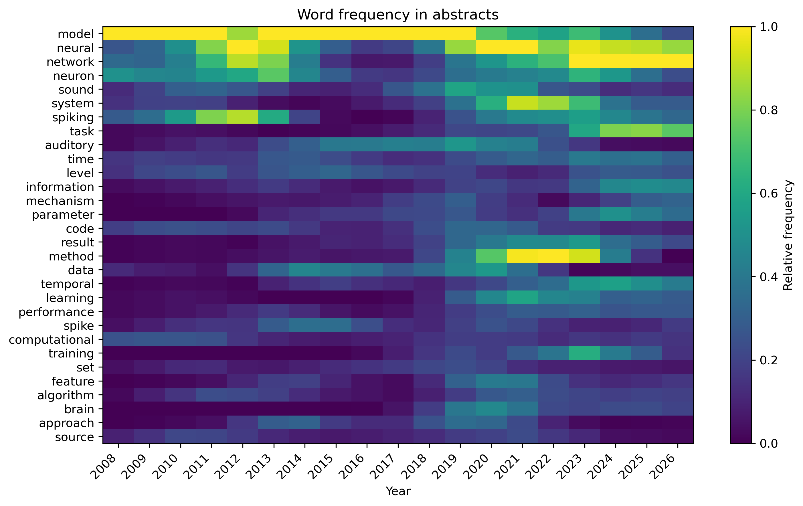

Research themes
Clickable map of research categories generated with Mermaid.
---
config:
layout: elk
---
graph LR
auditory[Auditory]
style auditory fill:#c4e799,stroke:#c4e799
click auditory "publication_category_auditory.html" "Open category Auditory"
brian[Brian]
style brian fill:#e7f6ad,stroke:#e7f6ad
click brian "publication_category_brian.html" "Open category Brian"
ecology[Ecology]
style ecology fill:#f9fdc2,stroke:#f9fdc2
click ecology "publication_category_ecology.html" "Open category Ecology"
learning[Learning]
style learning fill:#dff3a8,stroke:#dff3a8
click learning "publication_category_learning.html" "Open category Learning"
machinelearning[Machine learning]
style machinelearning fill:#88cd7f,stroke:#88cd7f
click machinelearning "publication_category_machinelearning.html" "Open category Machine learning"
mathematics[Mathematics]
style mathematics fill:#f8fcc0,stroke:#f8fcc0
click mathematics "publication_category_mathematics.html" "Open category Mathematics"
metascience[Metascience]
style metascience fill:#e4f4ab,stroke:#e4f4ab
click metascience "publication_category_metascience.html" "Open category Metascience"
modelling[Modelling]
style modelling fill:#acdd8e,stroke:#acdd8e
click modelling "publication_category_modelling.html" "Open category Modelling"
multimodal[Multimodal]
style multimodal fill:#f5fbb8,stroke:#f5fbb8
click multimodal "publication_category_multimodal.html" "Open category Multimodal"
neuraldataanalysis[Neural data analysis]
style neuraldataanalysis fill:#f7fcb9,stroke:#f7fcb9
click neuraldataanalysis "publication_category_neuraldataanalysis.html" "Open category Neural data analysis"
neuralsimulation[Neural simulation]
style neuralsimulation fill:#dff3a8,stroke:#dff3a8
click neuralsimulation "publication_category_neuralsimulation.html" "Open category Neural simulation"
neuroinformatics[Neuroinformatics]
style neuroinformatics fill:#b6e192,stroke:#b6e192
click neuroinformatics "publication_category_neuroinformatics.html" "Open category Neuroinformatics"
neuromorphic[Neuromorphic]
style neuromorphic fill:#cfec9e,stroke:#cfec9e
click neuromorphic "publication_category_neuromorphic.html" "Open category Neuromorphic"
neuroscience[Neuroscience]
style neuroscience fill:#2f934d,stroke:#2f934d
click neuroscience "publication_category_neuroscience.html" "Open category Neuroscience"
plasticity[Plasticity]
style plasticity fill:#f7fcbc,stroke:#f7fcbc
click plasticity "publication_category_plasticity.html" "Open category Plasticity"
sensory[Sensory]
style sensory fill:#a9db8c,stroke:#a9db8c
click sensory "publication_category_sensory.html" "Open category Sensory"
software[Software]
style software fill:#98d486,stroke:#98d486
click software "publication_category_software.html" "Open category Software"
soundlocalisation[Sound localisation]
style soundlocalisation fill:#e9f6af,stroke:#e9f6af
click soundlocalisation "publication_category_soundlocalisation.html" "Open category Sound localisation"
spikesorting[Spike sorting]
style spikesorting fill:#f8fcc0,stroke:#f8fcc0
click spikesorting "publication_category_spikesorting.html" "Open category Spike sorting"
spiking[Spiking]
style spiking fill:#97d385,stroke:#97d385
click spiking "publication_category_spiking.html" "Open category Spiking"
virtualreality[Virtual reality]
style virtualreality fill:#f5fbb8,stroke:#f5fbb8
click virtualreality "publication_category_virtualreality.html" "Open category Virtual reality"
visual[Visual]
style visual fill:#f8fcbe,stroke:#f8fcbe
click visual "publication_category_visual.html" "Open category Visual"
visualisation[Visualisation]
style visualisation fill:#f2fab5,stroke:#f2fab5
click visualisation "publication_category_visualisation.html" "Open category Visualisation"
auditory --> soundlocalisation
brian
ecology
learning
machinelearning
mathematics
metascience
modelling
multimodal
neuraldataanalysis --> spikesorting
neuralsimulation --> brian
neuroinformatics --> neuraldataanalysis
neuroinformatics --> neuralsimulation
neuroinformatics --> spikesorting
neuromorphic --> brian
neuroscience --> spiking
neuroscience --> plasticity
neuroscience --> soundlocalisation
neuroscience --> modelling
neuroscience --> learning
neuroscience --> neuroinformatics
plasticity
sensory --> auditory
sensory --> multimodal
sensory --> visual
sensory --> virtualreality
software --> neuroinformatics
soundlocalisation
spikesorting
spiking --> neuralsimulation
spiking --> brian
spiking --> spikesorting
virtualreality
visual
visualisation
Keywords over time
This image shows how the most common 30 words in our abstracts have evolved over time (with a little bit of smoothing to make it cleaner).
